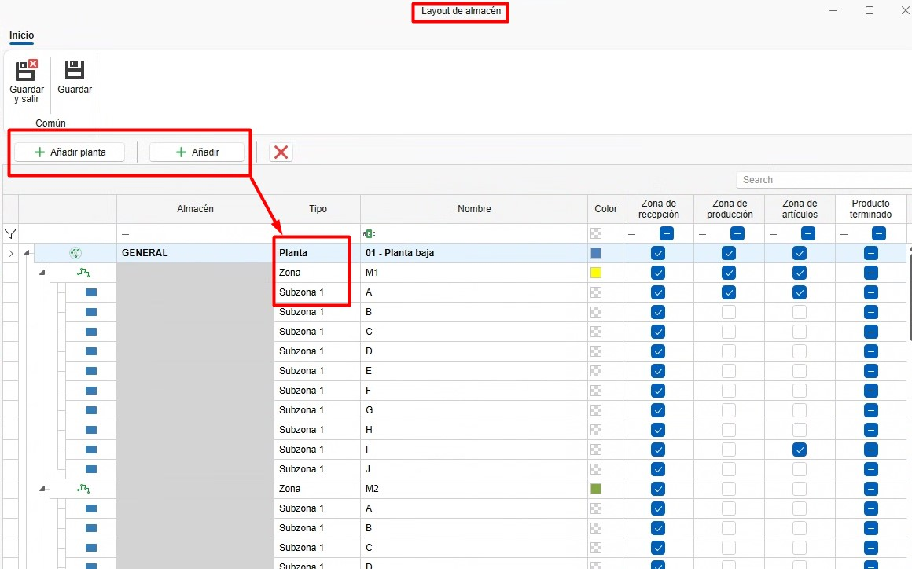
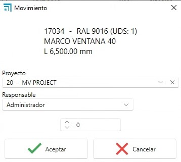
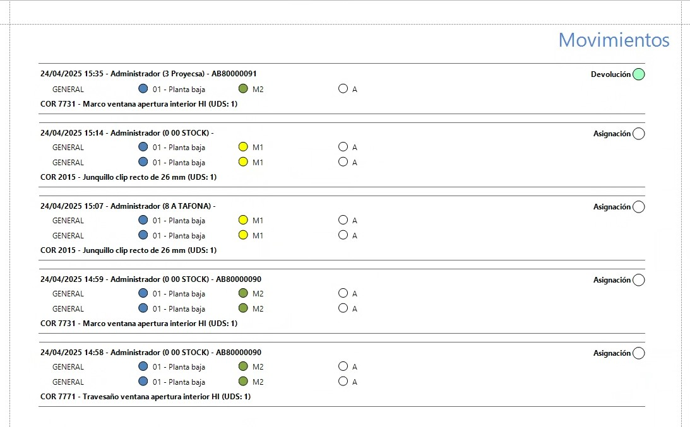
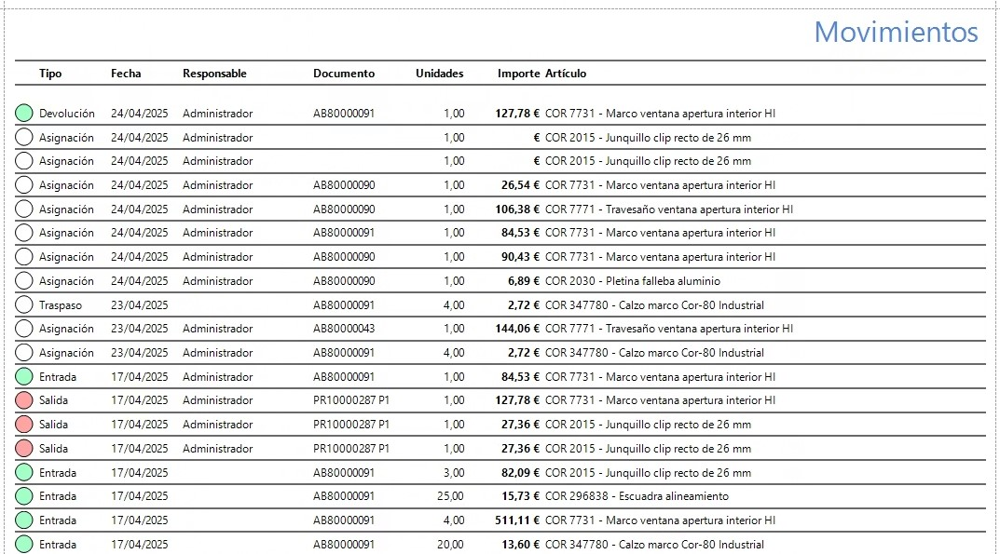

3. Sistema de control de stock ENBLAU (EN PROCESO...)
1. Propósito
El presente manual está diseñado para usuarios nuevos en el sistema de control de stock utilizado por los Clientes y Endades. El objetivo principal es proporcionar una guía detallada para la gestión eficiente de proyectos, desde la creación de pedidos hasta la optimización del proceso de producción en ENBLAU. Este documento abarca los pasos necesarios para realizar las operaciones clave del sistema y está estructurado de forma secuencial para facilitar su comprensión.
2. Gestión pedidos de compra
2.1. Pedidos de compra
- Desde el menú principal Compras, navegue a la sección "Pedidos de Compra".
- Especifique los materiales requeridos y su cantidad.
- En caso de cambios en las referencias, añádalas manualmente si están configuradas en la base de datos.
- En el pedido de venta (en la sección de Venta) selecciona el documento e ir a la pestaña Material necesario para sacar el listado de los materiales del pedido.
- Puedes indicar si quieres o no comprar, por si ya tienes en almacén. Te mostrará para cada material la información: unidades en stock, unidades reservadas, unidades pendientes.

-
Confirma en Pedir material y envía el pedido al proveedor correspondiente.
-
En el apartado de Almacenes tienes una opcion Pendiente de recibir donde te muestra un listado donde se puede visualizar los materiales pendente de recibir para cada proyecto y pedido de compra.

- Sobre la linea del articulo con el botón derecho puedes abrir el pedido de compra para ese material:

Nota: Para información mas detalladas sobre pedido de compras, sigue este enlace: Pedidos de Compras
¡Importante! Para hacer el pedido de materiales en el documento de venta, en algunos casos se requieren permisos especiales para realizar compras. Este permiso también es necesario para fabricar o instalar.

2.2. Asignar materiales a proyecto
- Desde Material necesario en el proceso de listar y pedir materiales, tienes la opción, según la necesidad, de asignar artículos de otro proyecto al proyecto en el que estás. Desde el apartado de ubicaciones Botón derecho sobre la línea - Asignar:

- Indicar el proyecto de destino a asignar (por defecto es en el que estás) y la cantidad (por defecto la que necesitas para el proyecto):

- Al asignar el artículo al proyecto en el que estás, automáticamente cambiará la unidad de stock al proyecto de destino, sumando la cantidad asignada, y al proyecto de origen se le restará. El artículo se pondrá en color verde.
¡Importante! Asegúrate de que se puedan utilizar materiales del proyecto desde el que se desea hacer el traspaso de los artículos.
2.3. Materiales reservados
- Desde un documento de Ventas, Compras y en Proyectos, se pueden reservar materiales para el proyecto, indicando en Materiales reservados desde el desplegable de Almacén.

- Abrirá una ventana de Material reservado y desde el apartado Material de proyecto puedes arrastrar los materiales de los pedidos al proveedor:

- Luego en el apartado de Almacenes se pueden ver todos los materiales reservados de un proyecto:


- En Compras hay una opción más en el desplegable de almacén llamada Reposición de stock, donde se mostrará un listado de bajo mínimo y bajo habitual.


Nota: El uso de material reservado es algo visual, eso no impedirá que se usen los materiales aunque estén reservados. Se recomienda el uso de Asignar materiales a proyecto si quieres tener un mejor control de stock.
3. Gestión de almacenes y movimientos
3.1. Almacenes Layout
- En el menú principal de Almacenes - Stock, puedes añadir o editar los almacenes.

- Configura el layout del almacén desde la página inicial: ENBLAU – Configuración – Almacén – Layout:

- Crea zonas, estanterías y posiciones en el sistema para una organización clara. Se mostrará como vista de árbol.
-
Relaciona cada posición con su correspondiente área de almacenamiento. Ejemplo:
- Añadir Planta: Añade una planta y puedes indicar el almacén.
- Añadir Zona/SubZona: Se añade una zona o subzona debajo de la ubicación seleccionada.

3.2. Stock
- En el apartado de Almacenes - Stock tienes el listado con las opciones Resumen, Resumen con ubicacion y Detallado:


-
Resumen: En ese listado podras ver de una manera resumida un material agrupado por proyecto asignado:

-
Resumen con ubicación: En ese listado podras ver de una manera resumida un material agrupado por proyecto asignado y su ubicación:

-
Detallado: En ese listado podras ver de una manera mas detallada donde muestra un material con su proyecto de compra, proyecto asignado, ubicacion en almacén y separado por documento de albaran de compra:

3.3. Movimientos en almacén
- Realiza movimientos de materiales entre zonas y proyectos:
- En Almacenes - Stock – Detallado, haz clic derecho sobre el material que quieras traspasar, descontar o asignar.

- Selecciona el material desde el proyecto.
-
Descontar: Indica el proyecto, número del pedido, responsable y cantidad (barras y piezas) o longitud (juntas).

-
Traspaso: Indica la ubicación de origen, destino, cantidad (barras y piezas) o longitud (juntas).

-
Asignar: Indica el proyecto de destino, responsable, cantidad (barras y piezas) o longitud (juntas). Esa funcion es la misma del apartado de Material necesario -Asignar materiales a proyecto.

-
Los movimientos de entrada, salida, traspaso y asignación de cada material se reflejarán en el Albarán. Se puede ver las entradas y salidas en Almacén – Movimientos.


-
Desde Movimentos de almacén hay una funcion que es Devolver. Click con el boton derecho sobre el movimento de salida que deseas hacer y aparecera la opcion de devolver:

Abrira una ventana Movimiento de devolución donde indicas las unidades y la ubicacion que quieres devolver del material, por defecto es la ubicacion de donde has dado salida a ese material:

3.4. Informes de almacenes (inventario)
-
En el apartado de Almacenes - Stock se puede imprimir diferentes tipos de informes:
-
Resumen: Hay dos informes Inventario y Inventario por fecha.

Inventario muestra un informe de inventario, seguún los filtros aplicado en el listado de almacén. Icluye las columnas Artículo, Proyecto Unidades, Unidades pendientes y Unidades reservadas.

Inventario por fecha muestra un informe de inventario en la fecha escogida. Incluye las columnas Artículo, Decripción, Unidades y Importe.

-
Resumen con ubicación:
-
Detallado: Hay un informe Inventario detallado.
Inventario detallado muestra un informe de inventario, seguún los filtros aplicado en el listado de almacén detallado. Incluye Proyecto, Número del albaran de compra, Ubicacion almacén, Artículo, Descrpción y Unidades.

-
En el apartado de Almacenes - Movimientos de almacén se puede imprimir diferentes tipos de informes:

Movimientos muestra un listado de los movimientos vizualizados en el listado de movimientos. Incluye Fecha del movimiento, Responsable, Proyecto asignado, Ubicacion almacén, Artículo, Descripción, Unidades y Tipo de movimiento.

Movimientos I muestra un listado de los movimientos vizualizados en el listado de movimientos. Incluye las columnas Tipo de movimiento, Fecha del movimiento, Responsable, Documento, Unidades, Importe, Artículo y Descripción.

4. Stock necesario
- Una vez se haya creado una produccion y mandado a taller desde el mismo se puede ver y descontar los materiales de forma manual.

- Se abre una ventana de Stock necesario donde indica si el material hay y almacenes y a que monitor (puesto) se descontara ese material. Para descontar el material hay que marcar la casilla en la columna Stock a descontar del material.
Importante! Si no hay el material en stock, no se descontara.
Nota: Para tener un controle mas detallado de stock se recomienda usar la app movil enSITE para hacer ese tipo de descuento de material. Para mas informacion sobre la app enSITE
7. Control de stock y reportes
- Monitorea el stock necesario desde la sección "Producción".
- Identifica materiales reservados y pendientes en tiempo real.
- Genera reportes de inventarios para evaluar el uso de materiales y planificar futuras compras.
8. Resolución de problemas comunes
- Error al importar referencias: Verifica que las referencias estén configuradas en la base de datos.
- Materiales sobrantes o faltantes: Asegúrate de registrar correctamente las ubicaciones y cantidades al recibir materiales.
- Problemas con el layout del almacén: Revisa la configuración de zonas y ajusta según sea necesario.
9. Conclusión
Este manual ofrece una guía paso a paso para los procesos principales en el sistema de control de stock. Siguiendo estas instrucciones, los usuarios podrán gestionar eficientemente los inventarios, mejorar la producción y optimizar la relación con proveedores. Para soporte adicional, contacte al administrador del sistema.